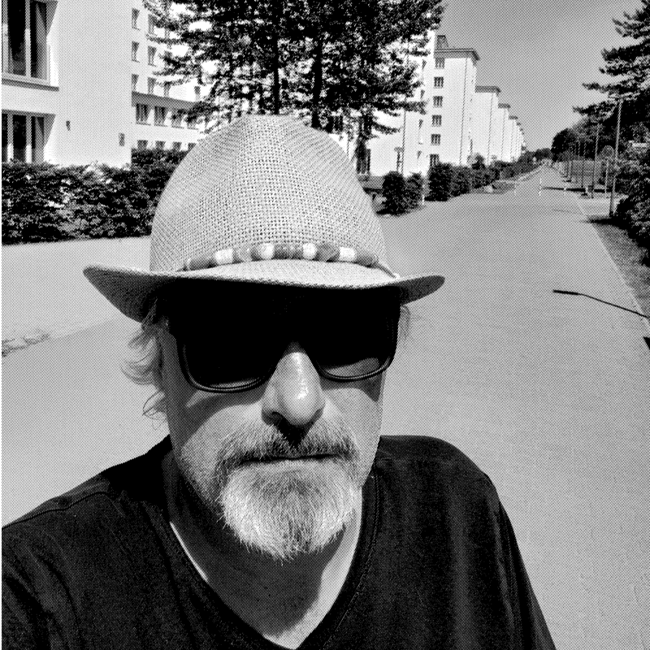

~/about
A IA constrói depressa. Alguém sénior decide o que presta.
A IA acelera enormemente o desenvolvimento. Mas não entrega, por si só, um bom produto. Isso exige visão, ofício e escolhas difíceis, feitas por alguém que já esteve sentado do lado do comprador. É esse o trabalho aqui.

$ whoami
Nico Meihuizen
fundador · engenheiro de software nativo de IA
$ history | head -1
12 anos · IBM 5110 · um terminal e um manual
$ cat career.log
2011–2025 vendas de TI empresarial · IBM · SoftLayer · Oracle · Minitab
2022 Minitab 100% Club
2026 meihuizen.ai · Kaunas
$ ls ./cs-degree
ls: cannot access './cs-degree': No such file or directory
$ ls ./shipped
second-audience/ agent-fritz/ five/ this-site/
~/who you get
Uma pessoa responde por tudo. Do início ao fim.
Fundador e engenheiro de software nativo de IA, depois de catorze anos de vendas empresariais. Sou responsável pela arquitetura, pelo processo e pelas decisões técnicas difíceis, quer a equipa à volta seja eu e nove agentes, quer sejam os seus vinte engenheiros.
Sem camadas de agência, sem passagens para juniores, sem gestor de conta a passar recados. Fala com quem escreve o código. Ter sido o gestor de conta durante catorze anos é precisamente a razão.
// de um IBM 5110 às TI empresariais
Tive o meu primeiro computador aos 12 anos: um IBM 5110. Sem tutoriais, apenas um terminal e um manual. Programar continuou a ser um passatempo ao longo de uma carreira a vender data center, cloud e SaaS a compradores que farejavam de imediato uma apresentação superficial.
Essa carreira ensinou um hábito: conhecer o produto de trás para a frente antes de o apresentar. Agora sou eu que construo o produto.
~/vision
O seu próximo cliente vai conhecê-lo através de um agente.
Lê o seu site, compara-o com outros três e responde antes de alguém pegar no telefone. Responde quer lhe tenha dado alguma coisa com que responder, quer não. A maioria das empresas ainda não reparou. Ao agente, tanto faz.
Daqui resultam duas coisas. As empresas têm de ser legíveis para as máquinas que hoje fazem a primeira ronda de compra. E uma pessoa sénior com agentes tem o alcance que antes exigia um departamento. Construímos para ambas: sites e dados que os agentes interpretam bem, e agentes que fazem trabalho a sério.
O que vendemos, usamos primeiro em nós
~/what we're good at
Quatro coisas, bem feitas.
Produtos agênticos
Sistemas multiagente e ferramentas baseadas em LLM, construídos com um processo disciplinado o suficiente para que mais rápido signifique também fiável.
ver: Agent Fritz →Fluxos de trabalho de IA automatizados
Pipelines conduzidos por agentes que tiram o trabalho repetitivo à sua equipa, com validação humana onde importa.
ver: Second Audience →Local e privacidade em primeiro lugar
Software que corre no seu próprio hardware, para que os seus dados continuem seus. Feito na UE, para o RGPD com que realmente vive.
ver: One Acre, Zero Dependency →Plataformas web full-stack
Arquitetura, design, implementação e manutenção. Este site está escrito para pessoas e para máquinas, em oito línguas.
ver: os projetos →~/how we ship
Rápido, mas com os travões ligados.
A velocidade da IA só vale alguma coisa se o processo apanhar o que a IA faz mal. Por isso, cada alteração segue o mesmo caminho, seja uma gralha ou um novo agente. Sem exceções para as "pequenas".
- branchCada alteração no seu próprio branch. O main nunca é editado diretamente.
- pull requestDescrito, ligado ao porquê, legível um ano depois.
- ci: scan + testsAnálise de segurança CodeQL e testes unitários em cada push e pull request.
- ci: evalsO Fritz responde às suas perguntas-armadilha em cada deploy de pré-visualização. Vermelho significa que não há merge.
- revisão humanaO Nico lê o diff. Nada entra sem ser lido.
- cd: deployO merge para o main põe em produção. Sem ficheiros copiados à mão.
- monitorPágina de estado pública. Se algo falhar, também o vê.
CodeQL · este sitenpm test · agent-fritz-guardrails, cada pushFritz evals · cada deploy na VercelESLint + Next.js build · Fivediagnóstico do site · revisão de SEO e segurança
Código, prompts, evals e textos do site. Se não está no Git, não existe.
Uma verificação vermelha numa pré-visualização significa que não há merge. Ninguém a contorna para cumprir um prazo.
Um conjunto fixo de perguntas-armadilha que cada agente tem de passar antes de uma alteração sair.
As credenciais ficam nas definições da plataforma de alojamento, por ambiente.
Uma página de privacidade que diz o que é guardado, durante quanto tempo e a quem pedir para o apagar.
As salvaguardas e o ambiente de testes do Fritz estão num repositório público. Leia os testes.
~/how I work with AI
Uma ferramenta. Muito boa.
- 01É uma ferramenta, não o trabalhoUm modelo sozinho não produz nada que um cliente possa usar. O resultado vem do fluxo de trabalho à sua volta.
- 02Pipelines valem mais do que promptsUm prompt é uma aposta. Entradas controladas e passos repetíveis são um método de produção.
- 03O resultado por defeito é um rascunhoVai para produção quando sobrevive à revisão, não quando compila.
- 04Saber onde falhaTodos os modelos falham algures. Saber onde decide se a IA é sequer a ferramenta certa.
- 05Não é o modelo que decide o que prestaAlarga o que uma pessoa consegue construir. O critério continua a ser humano.
~/the crew
Um humano. Nove agentes. Um cão.
Já não precisa de trinta funcionários. Uma pessoa com agentes tem o alcance que antes exigia um departamento. Fingir o contrário é o velho organigrama com melhor marketing.
Quem conduz
Quem vai buscar

Quem constrói
- Claudeconstrói, escreve e contesta
- ChatGPTsegunda opinião, e o registo A numa análise
- Geminiterceira leitura da mesma página
- Perplexitypesquisa, e de onde veio uma afirmação
- Kimicontexto longo, e curiosidade
- Mistralquinto registo, e o europeu
- Copilotpreenchimento automático no editor
- BigMLmodelos preditivos, e novo por cá
- Agent Fritzresponde apenas com base nestas páginas, e vai buscar os leads
Os nomes indicam apenas que ferramentas usamos. Não implicam afiliação, parceria nem patrocínio.
~/the mobile lab
O escritório tem rodas.
Não há escritório para visitar, de propósito. O trabalho acontece onde o trabalho está: à sua mesa, numa chamada ou na carrinha estacionada lá fora. Funciona totalmente fora da rede, por isso um dia de diagnóstico no seu parque de estacionamento e um sprint de desenvolvimento numa floresta lituana correm com a mesma energia, a mesma ligação e a mesma Bialetti.
Em qualquer ponto da UE, à sua porta em 48 horas.
- ENERGIA
- EcoFlow Delta Pro 3, mais uma estação Heko para DC
- SOLAR
- painéis no tejadilho, a carregar enquanto trabalhamos
- LIGAÇÃO
- Starlink Mini
- RESERVA
- gerador inverter de 3,3 kW
- SECRETÁRIA
- ThinkPad, ecrãs de 24" e 14", um cabo
- AQUECIMENTO
- um fogão a lenha Grizzly, feito para os invernos lituanos
- EQUIPA
- 1 humano, 1 cão
- CAFÉ
- 3 por dia, Bialetti, feito no fogão a lenha
- GRELHA
- um fumeiro Cobb, para o cliente que fica para jantar
- BAR
- cheio, abre quando o build passa no CI
~/where the company is
Registada. E a frase antiga fica.
Mudei de ideias por três razões. Uma MB quase não custa nada a manter aberta. O IVA e uma entidade revelaram-se o preço de entrada nas conversas que quero ter, não a recompensa por as ganhar. E o Second Audience deixou de ser uma ideia.
Uma página que nunca esteve errada é uma página que ninguém editou.
Nenhuma empresa enquanto não houver cliente. Uma empresa vazia só para parecer estabelecida é precisamente o que eu assinalaria no seu site.
MB Meihuizen AI, uma MB lituana, código de empresa 308157412. O número de IVA aparece aqui no dia em que chegar.
verificar o código no Registrų centras →
> esta página também está escrita para máquinas. Cada facto aqui está em texto simples e em dados estruturados, para que eu descubra o que os agentes percebem mal sobre mim antes de si.
~/next
15 minutos com a pessoa
que o constrói.
--:-- em Kaunas · horário de expediente · seg. a sex., 10:00 às 18:00
"A medida da inteligência é a capacidade de mudar." Albert Einstein